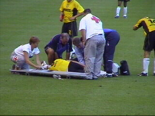

|
NNNAC - Roda JC (2-2) 17 augustus 2002 |
De McDrive in Nederweert was een mooie plek
voor de koempels on tour om even te poseren.
Het was zo heet dat de palmbomen de grond
uitschoten.
Bij NAC moet je de kaartjes kennelijk uit de
vuilnisbak graaien.
Sven Vandenbroeck kocht zijn kaartje gewoon
aan de kassa voor € 14,-.
Wij hadden er bij Roda € 17,50 voor betaald! Het
buscombikaartje kostte € 12,-. Drie prijzen voor
EEN kaartje.
Eerst nog wat biertjes pakken in het grote en
gezellige supportershome.
Een deel van de ruim 300 Roda-supporters.
Overtreding op Cristiano die door het publiek
van NAC voor puta (hoer) werd uitgescholden.
Twee correct (geel/zwart) geklede Roda-meëdsjes.
Arne Slot kan 1-0 scoren na defensief geklungel
bij Roda (24).

Tamas Petö viel uit met een ernstige blessure.
Nadat Vladan Kujovic een schot niet klemvast
kreeg kon Csaba Fehér de teruggesprongen bal
inschieten, 2-0 (54).
Gabor Babos kan een kopbal van Marc Nygaard
nog wegwerken maar de Deen schiet de bal in de
Marc Nygaard
nog wegwerken maar de Deen schiet de bal in de
rebound hard in, 1-2 (56).
De vers ingevallen Edrissa Sonko passt op Kevin
van Dessel die de bal inschuift. Roda maakt de
bijna niet meer verwachte gelijkmaker 2-2 (85).
De vreugde was enorm!
Cristiano glundert van oor tot oor.